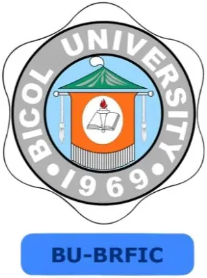

Bicol Regional Food Innovation & Commercialization Center (BRFICC) — Bicol University
Bicol University · Region V
The Bicol Regional Food Innovation & Commercialization Center (BRFICC) — also known as BRFIC since its 2024 renaming — is Bicol University’s DOST Food Innovation Center in Legazpi City, Albay. As the designated regional food innovation center for Region V, BRFICC serves food MSMEs, farmer cooperatives, and agri-food entrepreneurs across Albay, Camarines Sur, Camarines Norte, Sorsogon, Catanduanes, and Masbate — helping them develop and commercialize food products from Bicol’s rich agricultural base.
- Category
- Food Innovation Center
- Host institution
- Bicol University
- City
- Legazpi City, Albay
- Region
- Region V
- Operating status
- Operating
About the Center
Managed under the Bicol University Research, Development and Extension System (BU-RDESYS), the center is equipped with DOST-developed food processing technologies including a spray dryer, freeze dryer, water retort, and vacuum fryer — enabling food processors to develop shelf-stable, value-added products from local raw materials such as pili nuts, banana, coconut, laing (taro), and marine products. The center’s Facebook page (facebook.com/BicolRegionalFoodInnovationCenter) reflects active engagement with the Bicol MSME community.
The center plays a key role in technology transfer, linking Bicol University’s food science research with commercial applications for local food enterprises and supporting regulatory compliance for MSMEs seeking FDA product registration.
Programs & Services
- Food Product Development — Technical assistance for developing new food products from Bicol’s agricultural resources including pili nuts, coconut, banana, root crops, and marine products
- Vacuum Frying Technology — Production of low-oil, crispy fruit and vegetable chips for shelf-stable, export-quality snack products
- Water Retort Processing — Development of heat-sterilized, shelf-stable pouched and canned food products for extended shelf life
- Spray Drying — Conversion of liquid food ingredients into powder form for functional food development and ingredient supply
- Freeze Drying — Preservation of food products with superior flavor and nutritional retention for premium product lines
- Packaging & Nutrition Labeling — Support for FDA-compliant label design, nutrition facts computation, and export-ready packaging
- Food Safety & Regulatory Advisory — Guidance on Good Manufacturing Practices, FDA registration, and food safety standards
- MSME Training — Capacity-building programs on food processing technology, product development, and food entrepreneurship for Bicol food enterprises
Contact
Sources & references
- rdesys.bicol-u.edu.ph/brfic-2
- region5.dost.gov.ph/archives/200-bicol-regional-food-innovation-and-commerc…
- facebook.com/BicolRegionalFoodInnovationCenter
Details are drawn from public records and the sources above, July 2026.
Startupreneur Innovation Hub · synced from the Notion catalog (July 2026) · status: published.